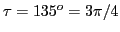
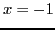
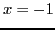
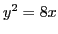
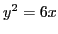
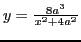
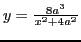
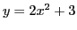
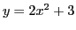
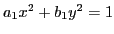

- Find the slope of
at the origin.
Ans.
.
- What angle does the tangent to the curve
at the origin make with the
 -axis?
-axis?
Ans.
.
- What is the direction in which the point generating the
graph of
tends to move at the instant when
 ?
?
Ans. Parallel to a line whose slope is  .
.
- Show that
 (or slope) is constant for a straight line.
(or slope) is constant for a straight line.
- Find the points where the curve
is parallel to the -axis.
Ans.  , .
, .
- At what point on
is the slope equal to
 ?
?
Ans. .
- At what points on the circle
 is the
slope of the tangent line equal to
?
is the
slope of the tangent line equal to
?
Ans.
- Where will a point moving on the parabola
be moving parallel to the line
?
Ans. .
- Find the points where a particle moving on the circle
moves perpendicular to the line
.
Ans.
.
- Show that all the curves of the system
have the same slope; i.e. the slope is independent of
 .
.
- The path of the projectile from a mortar cannon
lies on the parabola
 ; the unit is 1 mile, the -axis being horizontal and the
; the unit is 1 mile, the -axis being horizontal and the  -axis vertical, and the origin being the point of projection.
Find the direction of motion of the projectile
-axis vertical, and the origin being the point of projection.
Find the direction of motion of the projectile
(a) at instant of projection;
(b) when it strikes a vertical cliff
 miles distant.
miles distant.
(c) Where will the path make an inclination of
 with the horizontal?
with the horizontal?
(d) Where will the projectile travel horizontally?
Ans. (a)
; (b)
;
(c)
; (d)  .
.
- If the cannon in the preceding example was situated on a
hillside of inclination
, at what angle would
a shot fired up strike the hillside?
Ans.
.
- At what angles does a road following the line
intersect a railway track following the
parabola ?
Ans.
, and
.
- Find the angle of intersection between the parabola 
and the circle
.
Ans.
.
- Show that the hyperbola
and the ellipse
intersect at right angles.
- Show that the circle
and the cissoid

(a) are perpendicular at the origin;
(b) intersect at an angle of
at two other points.
- Find the angle of intersection of the parabola
 and the Witch of Agnesi,
.
and the Witch of Agnesi,
.
Ans.
.
For the interesting history of this curve, see for example
http://en.wikipedia.org/wiki/Witch_of_Agnesi.
- Show that the tangents to the Folium of Descartes,
at the points where it meets the parabola
are parallel to the -axis.
For some
history of this curve, see for example
http://en.wikipedia.org/wiki/Folium_of_Descartes.
- At how many points will a particle moving on the curve
be moving parallel to the -axis? What are the points?
Ans. Two; at and
.
- Find the angle at which the parabolas
 and
 intersect.
and
 intersect.
Ans.
 .
.
- Find the relation between the coefficients of the
conics
 and
when they
intersect at right angles.
Ans.
.